Administración (Admin)
Lo primero que debe hacerse es seleccionar el grupo default para poder mostrar todas las opciones. Una vez mostradas, podremos ir verificando las una por una.
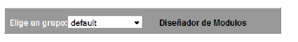
La administración de grupos nos permite crear grupos que funcionen como la lista de alumnos inscritos. La vista del modulo de Grupo es el siguiente:
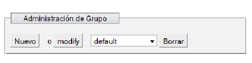
Para agregar un grupo le damos en nuevo, aparece la siguiente ventana.
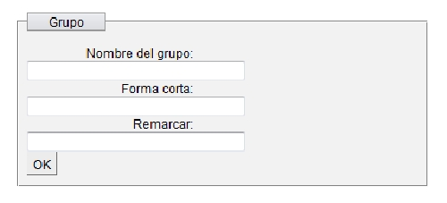
Solo sera necesario llenar el nombre y la forma corta una vez terminado esto, le damos en ok y el grupo quedara guardado.
En caso de modificar o borrar algun grupo, le damos click a la pestaña seleccionamos un grupo y seleccionamos la opción que desemos, para el caso de modificar bastara con renombrar los datos en la misma ventana.
Creando roles nos ayuda a conrtolar a los usuarios ya que podemos regular el acceso a contenido y tambien en que modulos tienen derechos de escritura.
Para crear un nuevo Rol le damos en nuevo en la siguiente ventana.
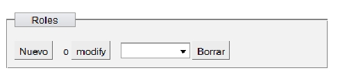
Despues bastara con llenar la siguiente tabla, como estamos enfocados en un curso dejaremos sin acceso los siguientes campos sin acceso.
- Por Hacer
- Contactos
- Projectos
- Tarjeta de Tiempo
- Incidencias
- Correo
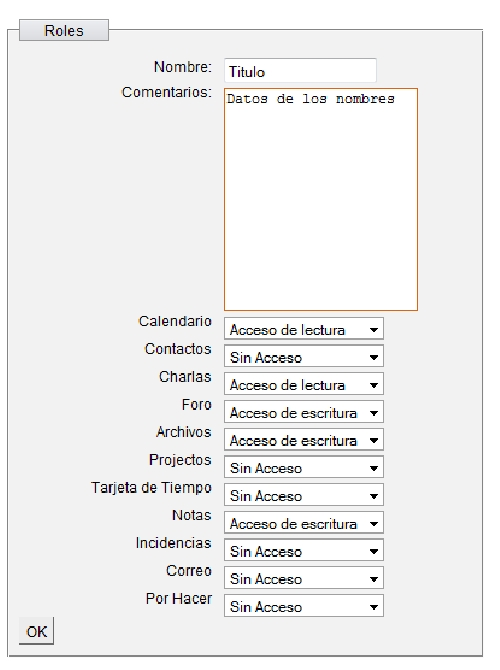
Dependiendo de que tipo de usuario sea le daremos los tipos de permisos que puede ser escritura y lectura, o solo de lectura una vez terminado le damos en ok y el rol esta terminado.
Para modificar o borrar, solo bastara en seleccionar un rol y seleccionar cualquier opción si le damos en borrar sera suficiente, para modificar regresara a la pantalla de nuevo con los datos anteriores, solo bastara en cambiar los nombres y titulos y darle en guardar.
Para esta aplicación nos enfocaremos en dos tipos usuarios el normal y el administrador, el primero podra ser un estudiante a el no le aparecera el menu de administrador, asi que no podra modificar usuarios, grupos o roles.
Para evitar la duplicidad de usuarios es recomendable que antes de agregar un nuevo usuario se elija el grupo default, y antes de agregar checar si ya existe el usuario, esto se hace en la casilla inicial.
Si el usuario que deseamos agregar no existe, le daremos en nuevo para saber si ya esta el usuario dado de alta en el grupo default, daremos click en la pestaña y buscarlo de la siguiente manera.
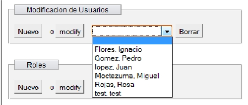
Una vez dado click en nuevo nos mostrara una nueva ventana para personalización de usuarios de la siguiente forma.
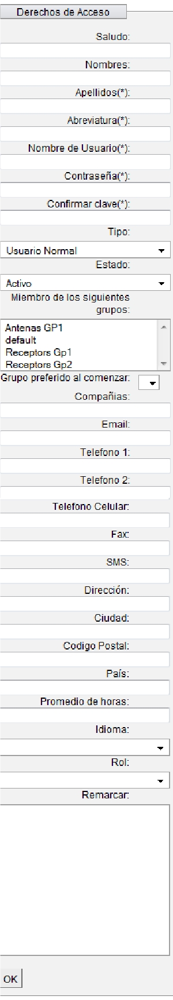
Solo los datos con asteriscos son obigatorios, en abreviatura bastara con un nombre simplificado, despues vendran los campos que nos interesan son los siguientes.
Para nombre de usuario bastarara con encontrar una convención podria ser que tanto el nombre de usurio como contraseña sea el número de cuenta y de igual forma una contraseña por grupo, o el mismo número de cuenta, de igual forma despues los usuarios tendran derecho de seleccionar, la propia.

Como se dijo anteriormente solo usaremos dos tipos de usuarios normal y administrador, el normal sera para estudiantes y el administrador para maestros.
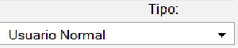
Para el grupo, sera selccionar utilizando control el grupo en que queremos que este, de igual manera dejarlo tambien en el default para que otros administradores puedan verlo y en grupo preferido al comenzar sera el Default.
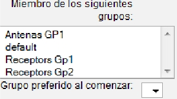
Rol dependiendiendo el tipo de usuario escogido le daremos uno de los dos roles que creamos los cuales son el de maestro y alumno.
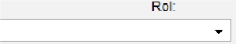
Ahora en caso de que el usuario lo encontraramos en el grupo default, bastara en darle click en modificar y en la misma sección donde tenemos los miembros de los grupos con ctrl seleccionamos el grupo en el queremos que este con el cuidado de no quitarlo en ninguno de los demas grupos. Para finalizar dejarlo como grupo preferido default.
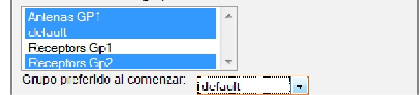
Borrar Usuario, o borrarlo de un Grupo.
En caso querer quitar un usuario a menos que ya no vaya estar en ningun grupo le damos en borrar, si solo se da de baja en un grupo le damos nuevamente modificar, y nuevamente con un ctrl deseleccionamos el grupo, mantenemos como grupo preferido default y damos click en ok.